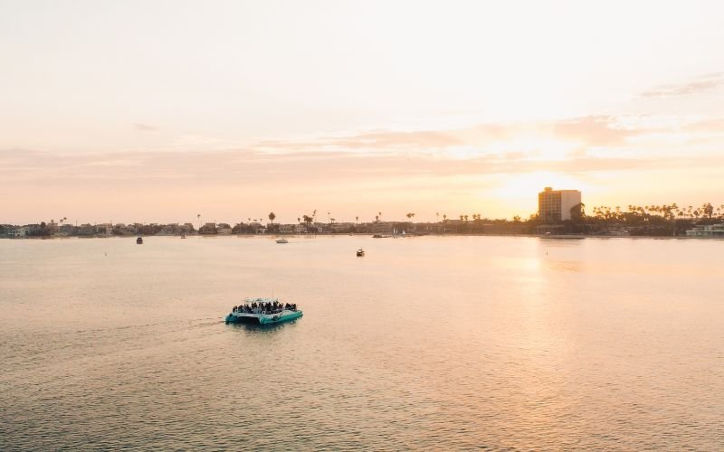
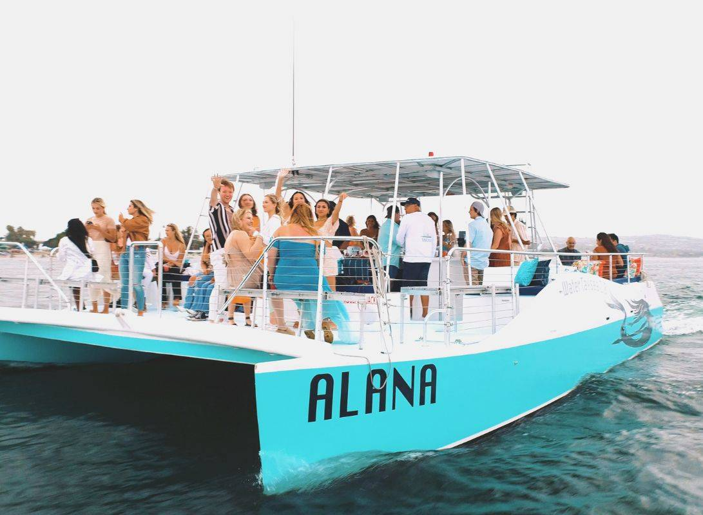

San Diego Party Boat — 35 Guests, Full Bar, Your Own Yacht
40ft Power Catamaran · Full Bar On Board · Captain & Crew Included
Alana is San Diego's premier party boat — a 40-foot Coral Island power catamaran with room for 35, a full liquor-licensed bar, and a professional captain, crew, and bartender on every trip. Book the whole boat for birthdays, celebrations, and group events. No strangers. No shared sailings. Just your crew and the bay.
A professional captain handles navigation while dedicated crew keeps the deck running. You focus on the party.
Craft cocktails, local beers, wine, and prosecco. Alana holds a full liquor license. No BYOB — everything comes from the bar on board.
Bluetooth-capable audio throughout the deck. Connect your own playlist and the crew will run the music all cruise long.
Two private below-deck bathrooms — essential for a 2.5-hour party. No one has to cut their night short.
Any reason to celebrate on the water.
Whether it's a milestone birthday, a team outing, or just a group that wants a proper party on San Diego Bay, Alana delivers.
Turn a birthday into something no one forgets. Private boat, full bar, decorations welcome — book the whole experience.
Graduations, promotions, retirements, anniversaries. The bay is the backdrop; the boat is yours for the afternoon.
Family reunions, friend groups, neighborhood socials. Up to 35 guests all on one boat — no one rides separately.
Team building, client entertaining, or a company celebration. Catering available. The crew handles logistics so you can focus on your people.
From booking to boarding — four steps.
Pick your date and time through FareHarbor. Live availability, secure checkout. Or call us at (844) 320-1237.
Meet at 2700 Shelter Island Dr, behind Ketch Grill and Taps. Parking available. Plan to arrive 10–15 minutes before departure.
Bring decorations, food, or anything you need for your party. The crew helps you get set up before the boat departs.
2.5 hours on San Diego Bay. Coronado Bridge, USS Midway, city skyline. The bar is open. The music is on. The crew handles everything else.
40-foot Coral Island power catamaran.
Alana is a professionally maintained 40-foot Coral Island power catamaran — built wide, stable, and spacious enough for 35 guests to move freely. Two hulls mean minimal rocking even on busy bay days. The open deck gives you room to mingle, dance, or settle into a seat with your drink.
Every party boat trip includes Captain Tess or Andrew at the helm, crew on deck, and bartender Ben behind the bar. You bring the guest list. We handle the rest.
35 guests (USCG certified) · Full liquor-licensed bar · Professional sound system (Bluetooth) · 2 below-deck bathrooms · Forward + aft deck seating · Retractable staircases · Catering arrangements available
For full vessel specifications, visit the About page.

Party boat guests on Alana.
Best party experience in San Diego. The whole boat was ours — full bar, great music, and the crew kept everything running perfectly. Absolutely book this for your next group event.
Andrew was awesome! And Ben was the best bartender! Super clean boat, would definitely come back. Our group of 28 had the best time on the water.
Capt. Tess and crew were amazing. I would recommend this charter to anyone looking for a private group experience on the bay. The views alone are worth it.
We rented the boat for a celebration and it exceeded every expectation. The staff handled everything so we could just enjoy being out on the water. 10 out of 10.
Party boat FAQ.
Ready to take the party to the bay?
Check live availability and book your private party boat through FareHarbor. Captain, crew, bartender, and full bar included on every trip.
Or call (844) 320-1237